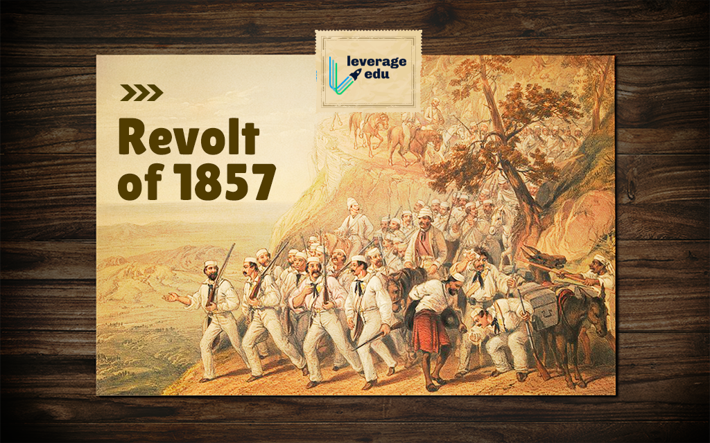
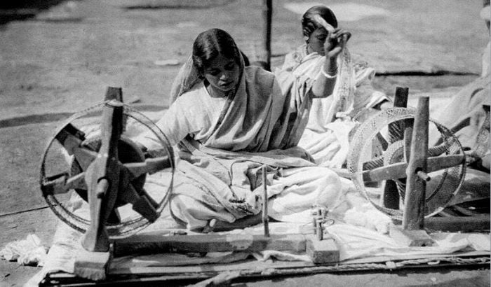
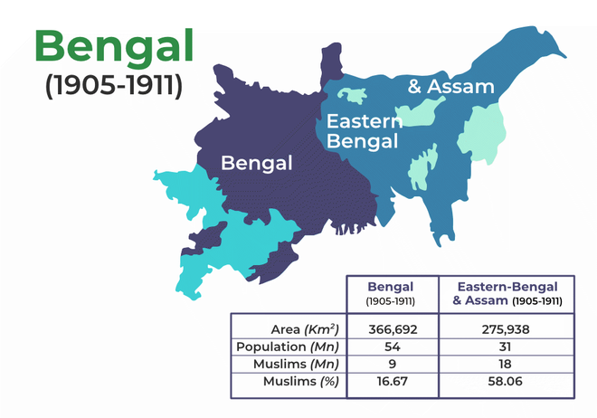
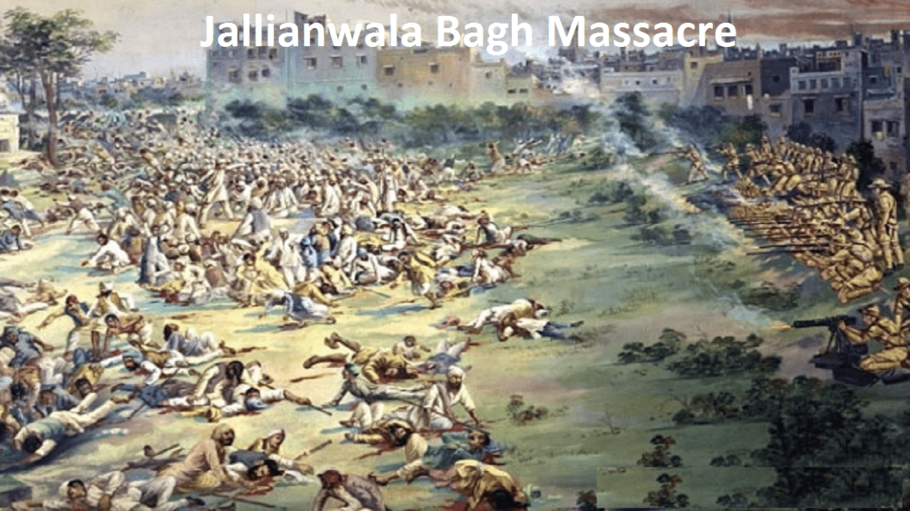
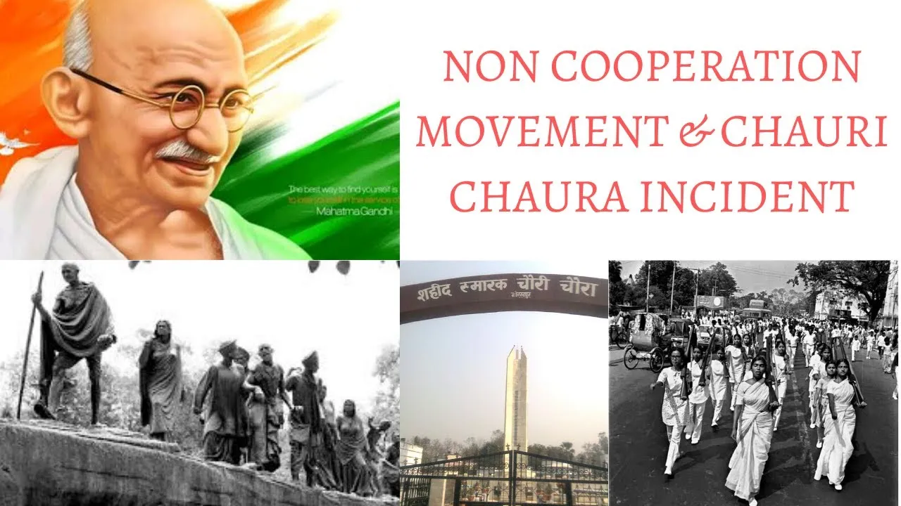
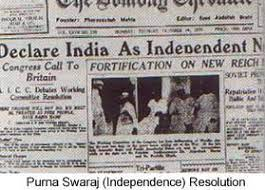
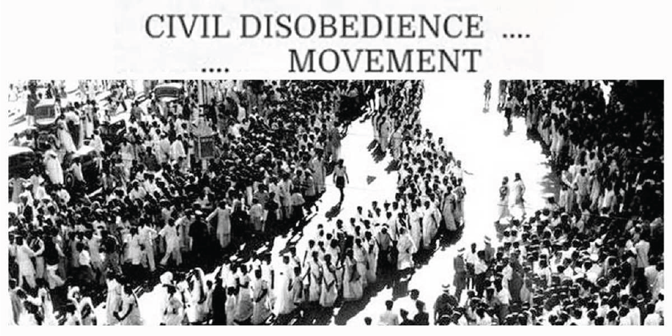
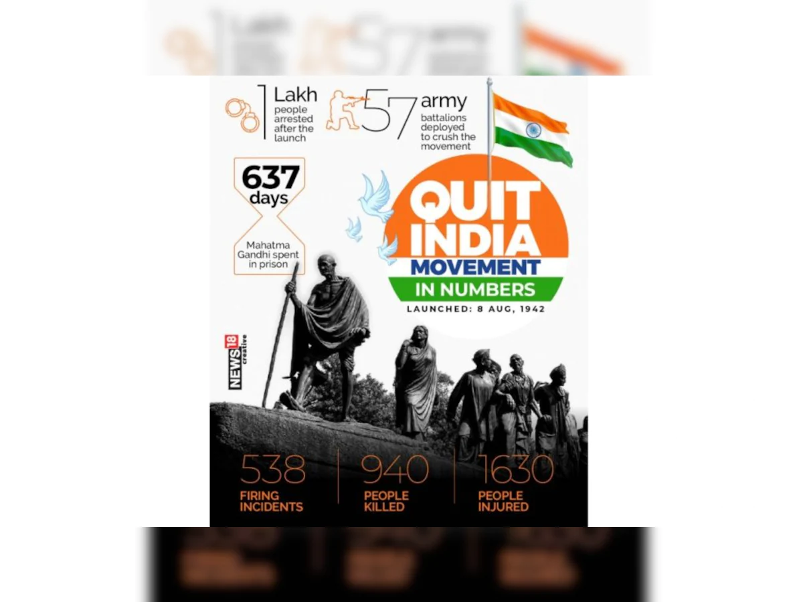

The timeline of India
1. The Revolt of 1857
The revolt of 1857 started in Meerut and then extended across Delhi, Agra, Kanpur, and Lucknow.
Following the outbreak at Meerut, the rebels soon arrived in the city of Delhi.
Bahadur Shah Zafar, the final Mughal Emperor, was at the helm from 1837 until 1857.
After the war for Independence, he was exiled to Rangoon in 1858. He passed away in 1862.
Rani Lakshmi Bai, the Queen of Jhansi, took part in the battle against the British in 1857 itself.
She quickly organized her troops and took charge of the protesters in the region of Bundelkhand.
Under the command of General Hugh Rose, the East India Company's troops began their counter-offense in Bundelkhand in the month of January 1858.

2. The creation of the Indian National Congress - 1885
As a response to the growth of British power over India,
a massive Indian movement called the Indian National movement took place,
formed by Indian reformists.
This eventually lead to the creation of the Indian National Congress under these reformists in 1885.
On December 28, Indian National Congress had its very first session in Bombay and it was attended by 72 delegates.
3. The Swadeshi Movement - 1905-1908
Swadeshi is a combination of two Sanskrit words that are swa ("self") and desh ("country").
The movement grew popular with the consumption and use of products made by indigenous people.
Indians began to abandon British products for Indian products.
It led to an enormous upsurge in the population, as well as a demand for swadeshi items, leading to the boycott of British manufactured products.
Students, women, and a large portion of the rural and urban inhabitants from Bengal and other
regions of India were actively involved in politics for the first time in the Swadeshi Movement.

4. Partition of Bengal - 1905
The year 1905 saw the Partition of Bengal, announced by Lord Curzon.
The first Partition of Bengal (1905) was a territorial reorganization of the Bengal Presidency
implemented by the authorities of the British Raj
. The reorganization separated the largely Muslim
eastern areas from the largely Hindu western areas.
Announced on 19 July 1905 by Lord Curzon, the then Viceroy of India, and implemented on 16 October 1905, it was undone a mere six years later.

5. The Rowlatt Act and Jallianwala Bagh Massacre - 1919
The Rowlatt Act was passed by the British government to increase their grip on power over the common folk.
This law was passed in March 1919 by the Imperial Legislative Council which gave them the power to arrest any person without any trial.
To abolish this act, Gandhi and the other leaders called for a Hartal (suspension of work) to show Indians’ objection to this rule,
called the Rowlatt Satyagraha.
The Jallianwala Bagh massacre or the Amritsar Massacre took place when many villagers gathered in the park for the celebration of Baisakhi.
The gatherers wanted to also peacefully protest the arrest and deportation of two national leaders, Satyapal and Saifuddin Kitchlew.
Jallianwala Bagh Massacre, also called Massacre of Amritsar, happened on April 13, 1919.
British troops fired on a large crowd of unarmed Indians in an open space known as the Jallianwala Bagh in Amritsar in the Punjab region of India, killing several hundred people and wounding many hundreds more.
It marked a turning point in India’s modern history,

6. Non-Cooperation Movement - 1920
Gandhiji demanded a campaign for "non-cooperation" with British rule.
Indians who wanted to end colonialism were asked to stay out of colleges, schools, and the courts of law.
They were told not to pay any taxes.
In essence, they were required to sign a "renunciation of all voluntary association with the British Government".
Gandhiji declared that if the non-cooperation was carried out effectively, India would be able to attain swaraj(freedom) within a year.
A number of groups of radical terrorists, particularly in Bengal, also pledged support for the movement.
The purpose of the Congress at this point had changed to the realization of Swaraj with peaceful methods.

7. The boycott of the Simon Commission - 1927
On November 8, 1927, an all-white Simon Commission was appointed to decide if India was ready to undergo more constitutional reforms.
Indian National Congress was against the Simon Commission because no Indian was there to represent Indian interests in the Commission.
Protests were held in a variety of locations.
The Simon Commission is also known as the Indian Statutory Commission.
It was boycotted by the Indians because All its members were Englishmen and the Commission had no Indian member.
This was seen as a deliberate insult to the self-respect of the Indians.
The government showed no inclination towards accepting the demand for Swaraj(freedom).
8. Purna Swaraj(Complete Independence) Campaign - 1929
In the Lahore session in 1929, Jawaharlal Nehru was made the president of the INC.
He declared "Purna Swaraj," which translates to Complete Independence, as the only righteous objective Indians could strive for.
On the banks of the Ravi River at midnight on December 31, 1929, India's tricolour flag was hosted.
The first mission that Congress took on in the year ahead was the task of coordinating across the nation and planning public gatherings in the Independence Pledge.

9. Civil disobedience Movement - 1930
A working committee was made in the Lahore session of Congress in 1929 to launch a program for tax evasion.
Gandhi's letter to Lord Irwin, in which he stated the most basic demand in 11 points, was ignored.
After that, there was just one choice, and that was civil disobedience.
Gandhi chose salt as his primary instrument to disobey.
In every Indian household, salt was essential.
However, people were prohibited from making salt, even for their own use, and forced people to purchase it from stores at a high price.
The salt monopoly that was imposed by the state was highly unpopular.
By making salt his goal, Gandhiji hoped to mobilize more people to protest against British rule.
Gandhi, along with 78 members belonging to the Sabarmati Ashram, started to march from Ahmedabad towards the coast at Dandi.
He broke salt laws by collecting salt from the shore.
On April 6, 1930, when he picked up some salt, Gandhi began his Civil Disobedience Movement.
This was an event that would remain unmatched in the history of the Indian nation for the massive participation across the nation it unleashed.

10. Gandhi-Irwin pact and the Round table conferences - 1931 and 1930-1932
British held a series of "Round Table Conferences" in London to discuss constitutional reforms in India.
The first gathering was held in the month of November 1930.
But, without the most powerful political leader of India, the meeting was a futile attempt.
Gandhi got released from prison in the month of January 1931.
The following month, he attended numerous lengthy meetings with Viceroy.
They culminated in what was known as the "Gandhi-Irwin Pact'.
The agreement provided for immediately releasing all political prisoners who have not been found guilty of violence,
the remission of all fines that have not yet been collected, and returning confiscated land that is not yet offered to third parties,
as well as lenient treatment for government employees who had resigned.
The Government also agreed to grant the right to produce salt for consumption in villages located along the coast.
They also granted the right of non-violent and peaceful picketing.
11. Government of India Act - 1935
In 1935, The rising demands for reforms in the Constitution of India caused India's British Parliament to pass the “ Government of India “ Act.
The Act offered a representative government and the creation of an All-India Federation based on the union of British Indian provinces and the Princely States.
Foreign affairs and defense would not be in the jurisdiction of the federal legislature.
The viceroy would maintain exceptional control over other areas.
12. Quit India Movement - 1942
The Quit India Movement was initiated during the Bombay session of the All-India Congress Committee by Mahatma Gandhi on August 8, 1942, calling for an end of British rule in India.
In the course of this battle, the people of India showed unmatched strength and courage.
The repression they were subjected to was the most brutal repression that has ever been employed against the national movement.
Gandhiji was particular about absolute freedom and no more fragmented strategy from the British.
He declared: "Do or die”.
This means either freedom for India or India perishes in the fight.
Gandhi demanded that government officials publicly declare their loyalty to Congress and not quit.
Parallel governments in different regions of the nation were the most striking aspect of the Quit India Movement.
Satara (Maharashtra) became the basis of the longest-lasting and most effective parallel government.
